Blackcat Ransomware
sha256: 847fb7609f53ed334d5affbb07256c21cb5e6f68b1cc14004f5502d714d2a456
Using PEID, it is using CRC32 a checksome algorithm and crpytographic library
the libraries the malware needed
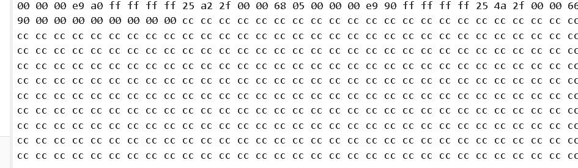It requires a key to run
in x32dbg, noticed accesstoken is passed to this function and the program closes if i step over it
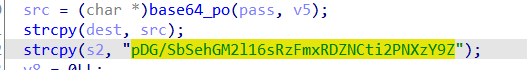which in IDA psuedo code looks like this
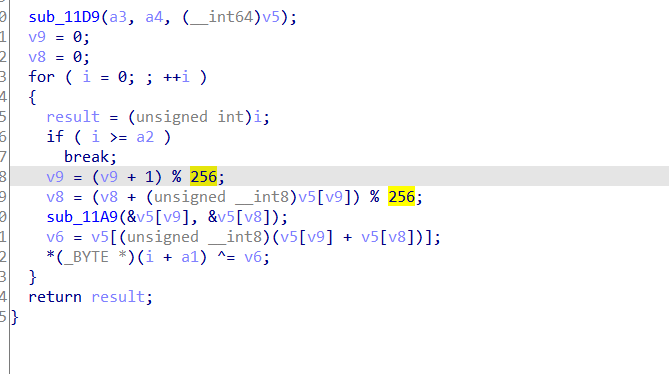It has TLS functions
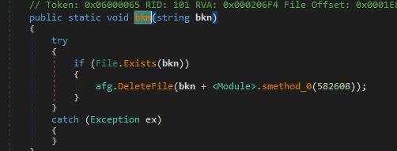Going into first TLS callback, it uses TlsGetValue with TlsIndex set to global variable
Finding the TlsAlloc import where it is called as it has to be called to set TlsIndex first ,not in TLS callback but passing all TLS callbacks in x32 i get to the entrypoint, and nothing happens on the VM
will reverse backwards a bit to make easier starting with our CryptGenRandom found in PEID (that generates a random number) One of places it is called under LABEL 8, here it gets the rand number and just returns
and that is called depending on value from TLS
then naming the caller of all above to Rand and going to where it is called, we notice the use of SSE instructions for vectorized processing (used in acceleration) the encryption used based on this maybe AES also since it uses _mm_loadu_si128 maybe it outputs 128-bit result
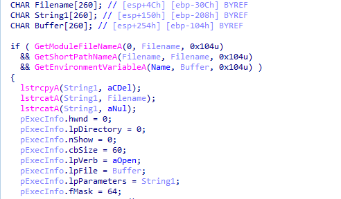naming above function Encrypt_SSE, looking where it is called we see some more encryption related stuff
the function is called within more encryption stuff then all is called with some passed as parameters maybe the block that will be encrypted
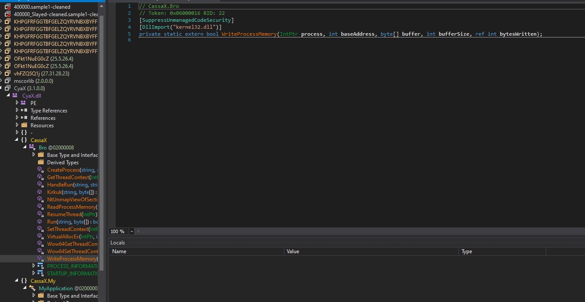Let’s check other commonly used function by Ransomware like Reg*, findnextfile, findNextVolume createToolSnapShot, Getsysteminfo , SystemParameters , ControlService , and SC manager and others for networking and system First ControlService used in this function
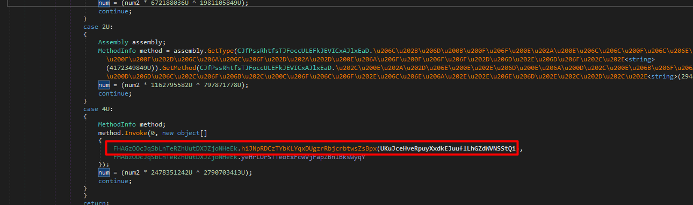Notice it is recursive function
with enumerating depending services passed to the caller (a1) and then processing information about the services
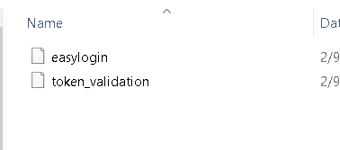 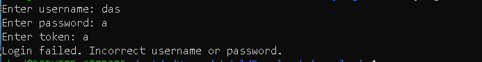Then uses the mentinoned above ControlService which Sends a control code to a service. with passed second parameter the code is 1 which is stop So it is stopping all depending services
 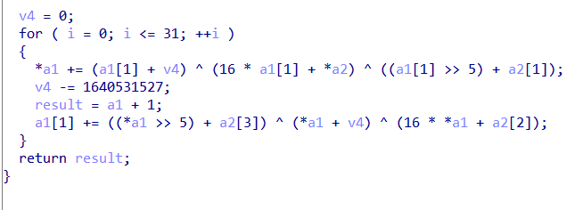
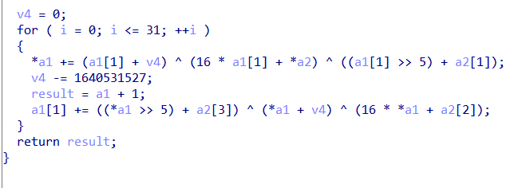
Then retrieves the current status of the specified services based on the specified information level then returns 1 if all is well
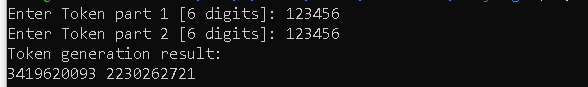stepping out of the function, we see it opens the service control manager with all rights whose handle is passed into services_enumed function
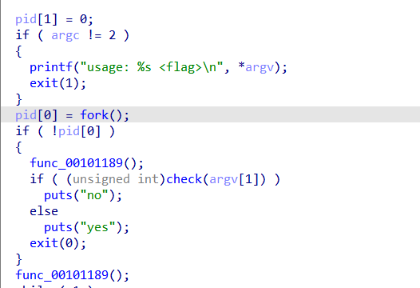It uses openprocesstoken and NTopenProcessToken to do some functions with higherprivilege (if it was started in higher privilege which makes me think there is a privilege escalation)
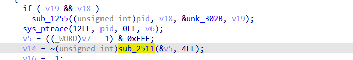It also uses FindFirstVolume and findNextVolume loops through all the volume most likely for encryption
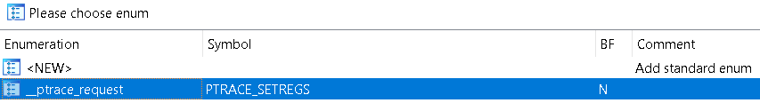 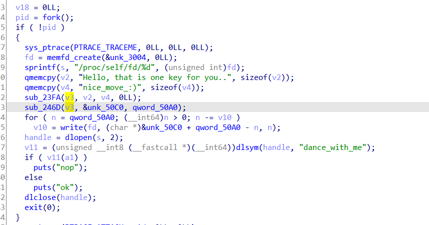We notice it is also using NetShareSum and used for SMB like services and encryptes the shared files as well
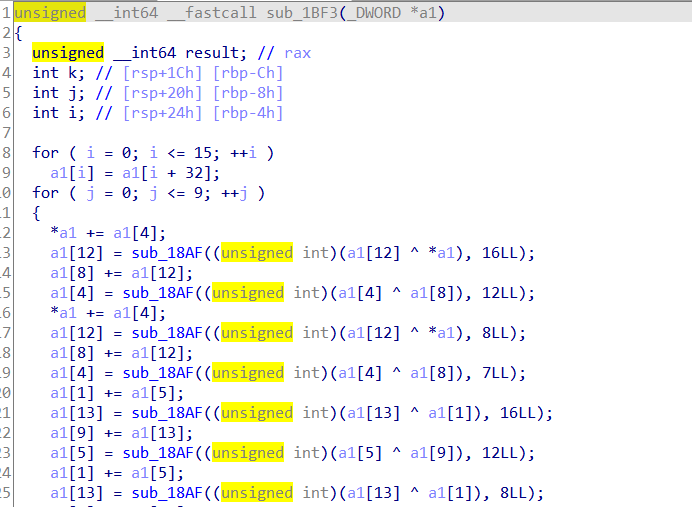It grabs my system information like number of processors and architecture likely for antiVM
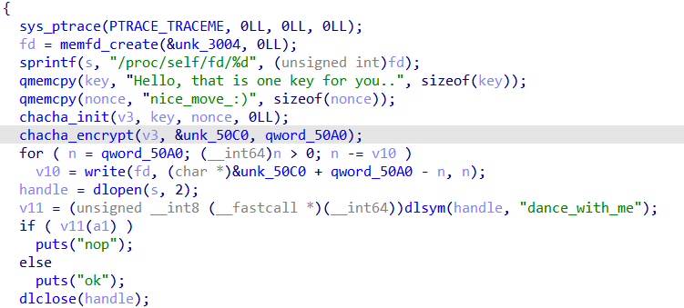It changes the wallpaper by accessing SystemParametersInfo function with parameter 14
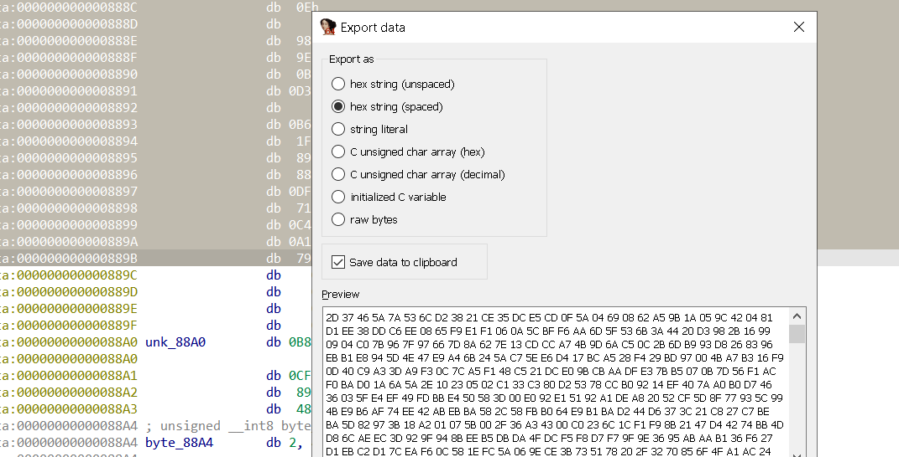